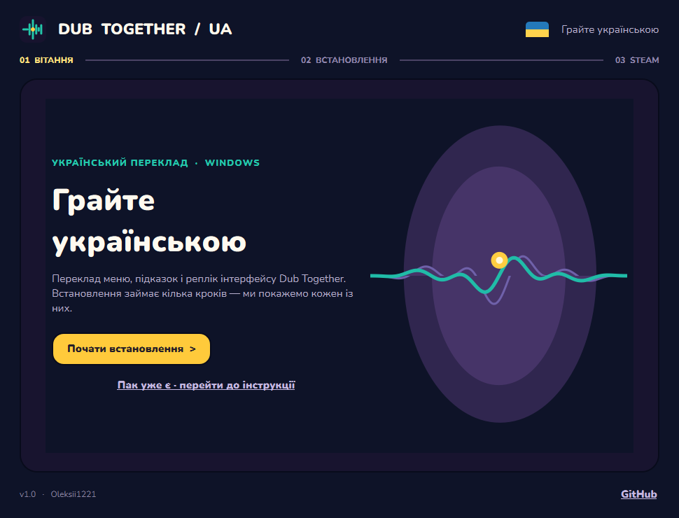
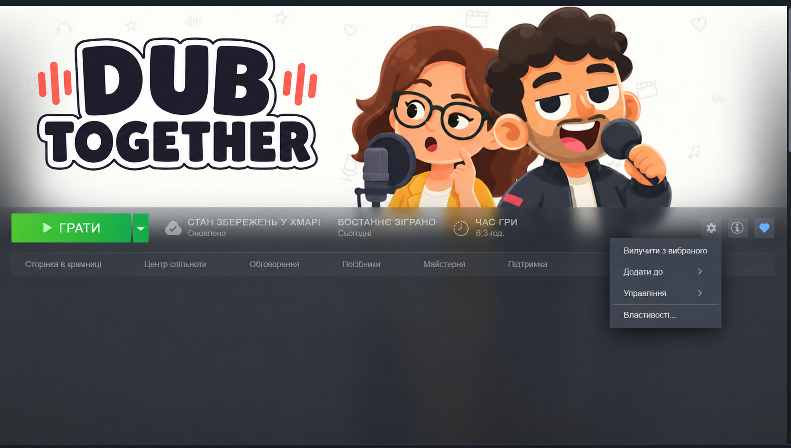
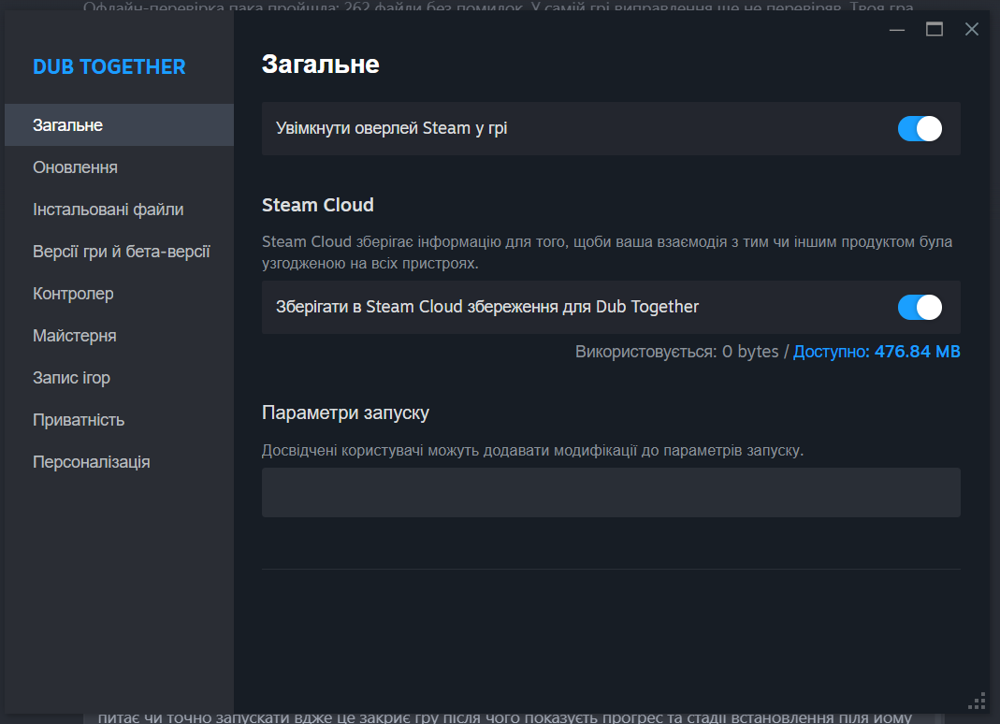

01
Відкрий EXE
Побачиш вітання та кнопку «Почати встановлення». Саме відкриття програми нічого не змінює.
УКРАЇНСЬКИЙ ПЕРЕКЛАД · WINDOWS
Меню, підказки й екрани озвучування Dub Together українською. Один інсталятор проведе тебе від першого кліку до потрібного рядка в Steam.
Версія 1.0 · Windows
ПРОСТО ПО КРОКАХ
Інсталятор відкривається на стартовому екрані. Гру він закриє лише після твого підтвердження.
Побачиш вітання та кнопку «Почати встановлення». Саме відкриття програми нічого не змінює.
Збережи прогрес у грі. Після підтвердження інсталятор закриє Dub Together і покаже хід роботи.
Скопіюй готовий параметр запуску. Програма покаже, де його вставити, а кнопка «Готово» закриє інсталятор.

СТВОРЕНО ДЛЯ ГРАВЦІВ
Прогрес, стадія помилки, кнопки копіювання та коротка інструкція збережені в одному вікні. Версія й автор — унизу, без зайвого акценту.
ПІСЛЯ ВСТАНОВЛЕННЯ
Інсталятор сам покаже готовий параметр --main-pack "..." з правильним шляхом саме для твого ПК.


DUB TOGETHER / UA
Завантаж Windows інсталятор із GitHub Releases. Почни тоді, коли зручно зберегти гру.